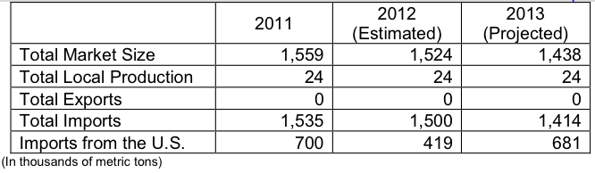

Wheat production is marginal in Colombia and is expected to average about 24 thousand metric tons annually. Colombia’s wheat is primarily of low quality and is not likely to expand. Under the FTA, the U.S. wheat enters Colombia with zero duty and no quota. Prior to FTA implementation, U.S. market share fell due to duty preferences for imports from the Southern Common Market (MERCOSUR) and Canada. FTA implementation created more favorable trade circumstances for U.S. wheat with greater opportunities for trade.
FTA implementation has greatly helped the United States to recover lost wheat import market share at the expense of Canada and MERCOSUR. Zero duties and no quota will create more competitive trade conditions against MERCOSUR wheat, which is subject to a price band mechanism, where duties fluctuate based on a reference price. Canadian wheat, which also has zero duties and no quota, will be the primary competitor.
While bread consumption in Colombia remains low, there has been a steady increase in Colombian pasta consumption creating increased demand for high-quality Durum wheat.
The U.S. Wheat Associates, Inc, from its regional office in Santiago, Chile, services wheat trade in South America. Information on the wheat market can be obtained from United States. Wheat Associates, Inc., La Concepción 177/32B, Casilla 16616,
Santiago 9, Chile. Telephone +562 235-7137, fax (562)2357371, oseco@uswheat.org Website: www.uswheat.org
The local wheat milling industry is represented by the National Federation of Wheat Millers, FEDEMOL, at Calle73 No. 8- 13 Torre A, Bogotá , D.C. – Colombia, telephone +57-1 326-8500 ext. 2420, fax (57-1) 347-3196, E-mail: jjimenez@andi.com.co.
The Office of Agricultural Affairs at the American Embassy Bogotá can be contacted via e-mail at agbogota@usda.gov or telephone (57-1) 275-4623, fax (57-1) 275-4525.